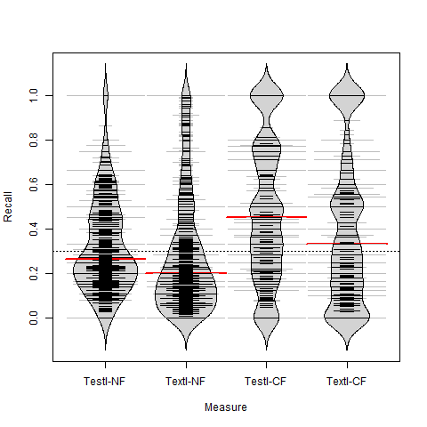
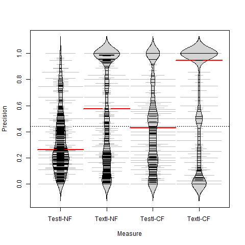

Using acceptance tests to predict files changed by programming tasks
Home
Evaluation Results
Task interfaces
RQ1
RQ2
RQ3
RQ4
Samples
Projects selection
Tasks selection
Sample of 74 tasks
Sample of 463 tasks
Home
RQ4
RQ4: Is TestI a better code change predictor than TextI?
TestI has better recall but inferior precision than TextI


Wilcoxon Signed-Rank test applied to precision and recall measures of ITest and IText
Hypothesis
pvalue
r
TestI-NF precision = TextI-NF precision
2.7e-37
0.59
TestI-NF recall = TextI-NF recall
3.4e-04
0.17
TestI-CF precision = TextI-CF precision
5.2e-15
0.36
TestI-CF recall = TextI-CF recall
1.2e-06
0.23